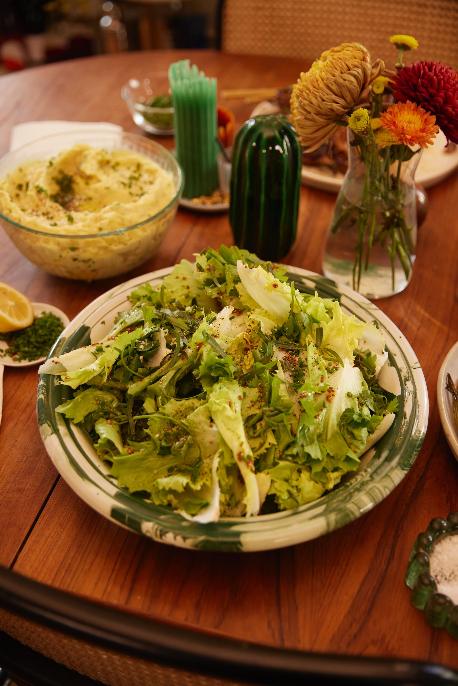

Bitter Leafy Salad

Description
This is an extremely simple salad meant to provide clean, crunchy relief from the fantastically heavy things on the table. You can use whatever mix of herbs and sturdy greens you can get your hands on here, all with varying degrees of bitterness (escarole, endive, radicchio, castelfranco, even hearty arugula would be nice). Use plenty of lemon juice or vinegar to make it adequately tangy, and do not skimp on black pepper. Just avoid anything that wilts as soon as it’s dressed, as this salad should stick around on the table as long as possible.
Ingredients
- 1 large head escarole, romaine or chicories like radicchio (if you don’t mind the bitterness), torn into large pieces
- 1 1/2 cups parsley
- ¾ cup finely chopped chives
- ¼ cup tarragon or dill (optional)
- 3 tablespoons whole grain mustard
- 2 tablespoons fresh lemon juice or white wine vinegar, plus more
- Kosher salt, freshly ground black pepper
- Olive oil, for drizzling
Steps
- Toss escarole, parsley, chives and tarragon together in a large bowl.
- To serve, whisk mustard and lemon juice together in a small bowl and season with salt and lots of black pepper. Spoon over lettuces and herbs, tossing to combine. Drizzle with olive oil and another seasoning of salt, pepper and more lemon juice if it needs.
DO AHEAD: The lettuces and herbs can be combined in advance— just keep them either refrigerated or in a large bowl covered with a damp paper towel to prevent leaves from drying out.